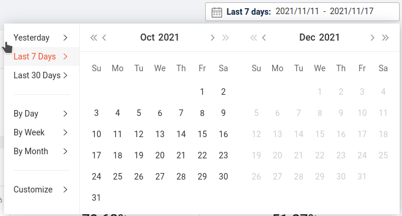

数据场景多时区的处理
1. 会涉及多少个时间？
假设这样的场景：
你，平时人在日本（你的电脑的时区是 +9），现在到泰国出差（泰国时区 +7），浏览巴西的数据（巴西时区 -3），访问的服务器是在新加坡（新加坡时区 +8），当时时间是 YYYY-MM-DD HH:mm:ss （标准时区 +0）。
这里涉及了 5 个时间，或者说，同一个时刻的 5 种表示。
| 作用 | 国家/地区 | 时区的小时偏移 | |
|---|---|---|---|
| 客户端时间 | 日本 | +9 | |
| 人所在地方时间 | 泰国 | +7 | |
| 数据来源的地方时间 | 巴西 | -3 | |
| 服务器所在地方时间 | 新加坡 | +8 | |
| 当前标准时间 | 格林尼治 | 0 | |
在这 5 个时间中，我们加一些必要的要求，可以去掉其中 2 个。
首先，“人所在的地方时间”，除非业务上的特别要求，否则我们在处理时不会使用涉及地理位置的一些手段去额外处理“所在的地方”，只是单纯使用“客户端时间”就可以了。所以，这个时间可以不用管。
其次，“服务器所在的地方时间”，因为服务器本来就可能在多地部署，所以我们理应不必关心这个时间。那为了多地的服务器都有一致的响应表现，服务器相关的时间就应该统一，为了不额外添加一个时间，而“客户端时间”和“数据来源的地方时间”又是变化的，剩下的“标准时间”就是一个好的选择。即，把服务器时间处理成“标准时间”，那过程中我们就可以只关心 3 个时间了。
| 作用 | 国家/地区 | 时区的小时偏移 | |
|---|---|---|---|
| 客户端时间 | 日本 | +9 | |
| 数据来源的地方时间 | 巴西 | -3 | |
| 当前标准时间 | 格林尼治 | 0 | |
2. 业务上关心的时间
| 作用 | 国家/地区 | 时区的小时偏移 | |
|---|---|---|---|
| 客户端时间 | 日本 | +9 | |
| 数据来源的地方时间 | 巴西 | -3 | |
| 当前标准时间 | 格林尼治 | 0 | |
在这 3 个时间中，业务层面关心的时间只有 1 个，就是“数据来源的地方时间-巴西”，其它的都是实现时技术上的处理。
从交互上，访问巴西的数据，用户给出了一个时间限制，“2021-10-10 - 2021-10-12” ，这个 10 月 10 日到 10 月 12 日，当然表示的是巴西时间。你不能要求使用者在查询时，先人为地去把巴西时间换算到标准时间，或者其它时区的时间。
当然，只看一个地方，实际查询时，只要“2021-10-10 - 2021-10-12”的含义清楚，自然可以把它们转换到任何需要的时区上。
但是，如果同时看巴西和和泰国的数据，给出了一个时间限制“2021-11-10 13:00:00 - 2021-11-12 17:30:00”，那这个日期就不好解释了。
- 使用巴西时间或者泰国时间，都不可行，因为使用者无法控制。
- 使用固定的标准时间或者 +N 时间，虽然可行，但是对使用者不方便。同时，这个解释下取出的数据，没有意义。因为很有可能你把 A 地的业务高峰时间和 B 地的半夜睡觉时间的数据放在一起了。
- 所以，统一解释成“当地时间”，是最好的。即对巴西，它是 -3 的时间，对泰国，是 +9 的时间。
为了支持“当地时间”的数据获取，在数据存储时，就需要一组“当地时间”的维度列。
那是否还需要一组“绝对时间/标准时间”的维度列呢？我个人看法是不需要，但是可以加一列时间戳，这个时间戳本身是“标准时间”，也是对“当前时间”的一个维度扩展。
后面虽然会说到时间戳对人的使用不友好，但它对于数据模型的意义就是在于把它看成当地时间的维表中的一列而已。
所以，数据存储的宽表形式，日期方面大概有：
| 当地时间 | 时区偏移 | 时区名 | 年月日 | 年 | 季 | 月 | 周 | 日 | 星期 | 年季 | 年月 | 年周 | 季月 | 月周 | 时 | 分 | 月日时 | 时分 | 时分秒 | 时间戳 | |
|---|---|---|---|---|---|---|---|---|---|---|---|---|---|---|---|---|---|---|---|---|---|
3. 使用时间戳还是日期
两个东西的性质：
- 时间戳，任何时候没有歧义，对机器处理友好。但是对人不友好。
- 日期，如果是带时区偏移的日期，也没有歧义。机器处理解析会麻烦一些。对人友好。
不难看出这里面是有矛盾的。
使用时间戳，虽然对人不友好，但是任何时候，它肯定不会带来麻烦的问题。而同时，我们大多数时间使用日期，又是不带时区偏移的，这就容易出现误解或者付出额外解释或者沟通成本。
个人的看法：带时区偏移的日期 > 时间戳。
另外，对于“带时区偏移的日期”，可以附加解释，当没有带上时区偏移时，系统会怎么处理。
4. 时区 API
首先说一下，不管有没有显示的处理时区，“日期”类的 API ，它表示的时刻的含义，任何时候都是明确的。如果没有显式配置时区，那么使用的就是“当前系统时区”。判断标准就是当把它们转换到时间戳时得到的值。除非 API 设计成，没有配置时区，不能转换到时间戳，否则，它们都隐式包含了时区信息。
时区相关的操作，有两种：
- 转移时区，时刻不会改变。即把
2021-10-10 12:00:00+8000变成了2021-10-10 11:00:00+7000。 - 替换时区，时刻会改变。把
2021-10-10 12:00:00+8000变成了2021-10-10 12:00:00+7000。
在具体场景下，先要想清楚，需要的是“转移”还是“替换”。
4.1. python
python 的 datetime 模块，直接有对时区偏移的支持。
- 使用
datetime.timezone构造时区对象（包括偏移和名称） - 使用
datetime.astimezone转移时区。 - 使用
datetime.replace替换时区。
# -*- coding: utf-8 -*- import datetime dt = datetime.datetime(2021, 10, 10, 12, 0, 0) print(dt.isoformat(), dt.tzinfo) tz = datetime.timezone(datetime.timedelta(hours=4), "MyTZ") dt1 = dt.astimezone(tz=tz) print(dt1.isoformat(), dt1.tzinfo) dt2 = dt.replace(tzinfo=tz) print(dt2.isoformat(), dt2.tzinfo)
输出是：
2021-10-10T12:00:00 None 2021-10-10T08:00:00+04:00 MyTZ 2021-10-10T12:00:00+04:00 MyTZ
4.2. js moment
moment 即使不添加额外依赖，对时区偏移也有现成的支持。而且在初始化时，也可以选择以“当地时间”初始化或者以“标准时间”初始化。
var m = moment('2021-10-10 13:00:00', 'YYYY-MM-DD HH:mm:ss') m.format()
输出： 2021-10-10T13:00:00+08:00 。
而：
var m = moment.utc('2021-10-10 13:00:00', 'YYYY-MM-DD HH:mm:ss') m.format()
输出： 2021-10-10T13:00:00Z 。
moment 中，使用 utcOffset(minutes, replace?) 做时区操作：
moment('2021-10-10 13:00:00', 'YYYY-MM-DD HH:mm:ss').utcOffset(60).format() moment('2021-10-10 13:00:00', 'YYYY-MM-DD HH:mm:ss').utcOffset(60, true).format()
输出是：
2021-10-10T06:00:00+01:00 2021-10-10T13:00:00+01:00
5. 前端交互的麻烦事
5.1. moment
本来使用“标准时区”就没有歧义的， moment 也支持直接用 utc 的方法得到日期。
但是 moment 中有一些 API ，是必然要和确定的时区联系在一起，而不是单和客观时刻有关。
典型的是 startOf('day') 这套。同一个时刻，不同的时区，结果时刻就不同。
2021-10-10 22:00:00+8000 和 2021-10-11 00:00:00+1000 是同一个时刻。
前者结果是 2021-10-10 00:00:00+8000 ，后者是 2021-10-11 00:00:00+1000 ，两个结果完全不同。
5.2. 时间类组件
前面说为了避免陷入多个时区混乱的泥潭，在系统对接时，使用带时区的日期，或者时间戳都行，没有歧义。
但是前端交互的情况，有点像，你跟一个系统对接，那个系统的日期，就一定要用变化的当地时间，你跟它一起玩，每时每刻都要盯着日期，烦死了。
这里说的，就是那些日期筛选的组件。

本来这些组件，可以只做“形式化”上的处理，即，一方面按公历，生成界面。另一方面，仅以形式化给出用户操作了什么。
比如，用户点了图中的“14”，那回调中，组件只需要给到，用户点了： 2021, Oct, 14, Last 7 Days 这些信息，但是现在的组件都会自作多情，告诉你用户点了 2021-10-14 ，本地的，这个日期。这一下，误会就大了。
回到最开始的那个例子：
你，平时人在日本（你的电脑的时区是 +9），现在到泰国出差（泰国时区 +7），浏览巴西的数据（巴西时区 -3），访问的服务器是在新加坡（新加坡时区 +8），当时时间是 YYYY-MM-DD HH:mm:ss （标准时区 +0）。
| 作用 | 国家/地区 | 时区的小时偏移 | |
|---|---|---|---|
| 客户端时间 | 日本 | +9 | |
| 数据来源的地方时间 | 巴西 | -3 | |
| 当前标准时间 | 格林尼治 | 0 | |
我们要处理的是“巴西时间”，不是“客户端时间”。用户点了 14 号，我想要的是巴西时间的 14 号，你硬要告诉我用户点的是泰国的 14 号。
所以，使用这些组件要处理“巴西时间”时，每一步，都要自己额外处理一下转换。
- 初始值输入。
- 当前值显示。
- 选择值的输出。
- disable 值的判断。